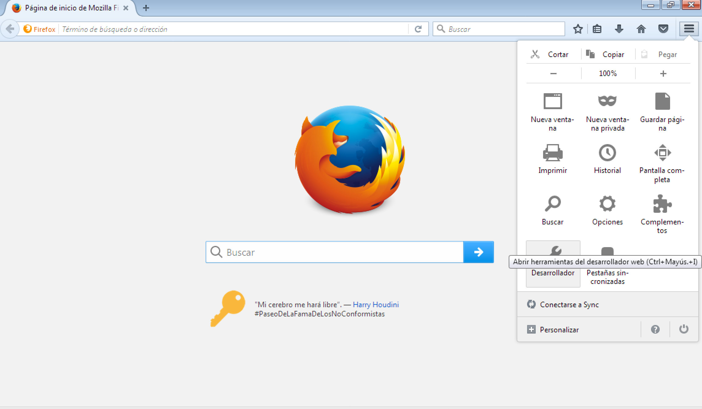
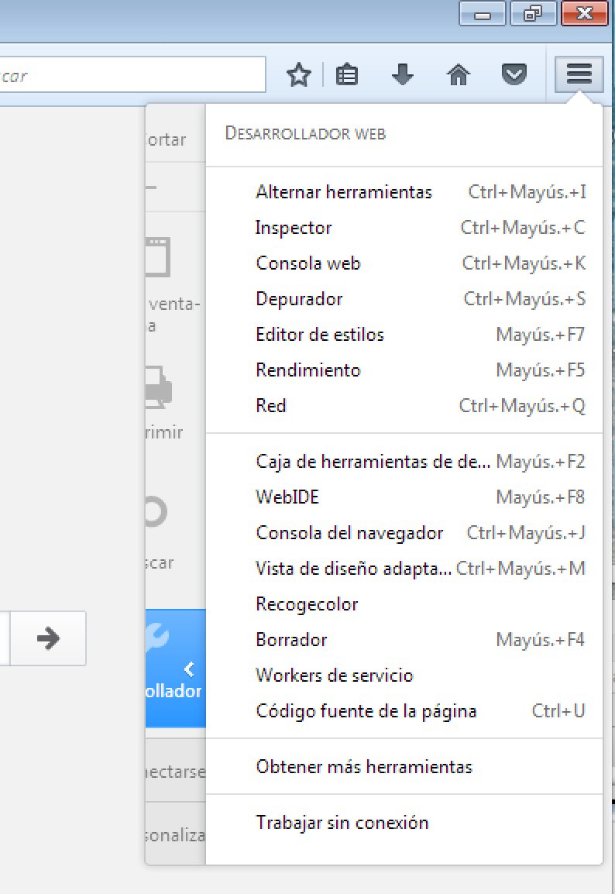
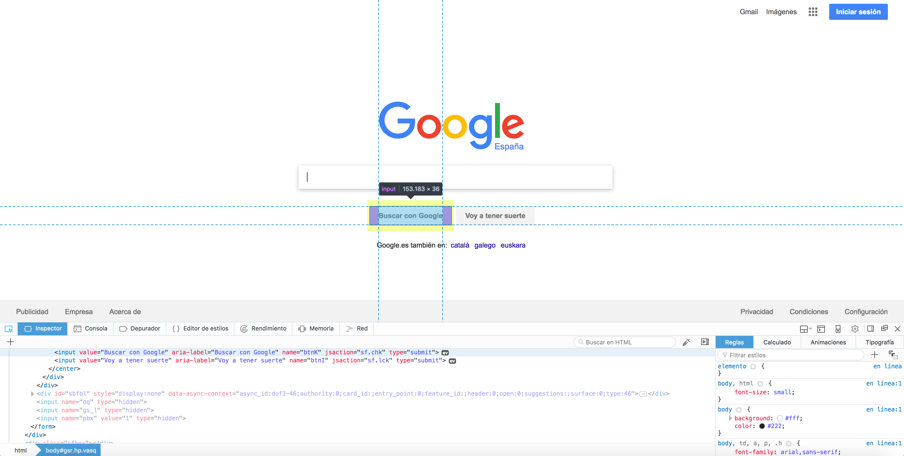

5.1.3.- Mozilla Firefox.
Originalmente se utilizaba como herramienta para inspeccionar el código fuente en HTML y CSS de la web la extensión Firebug. En las últimas versiones, Mozilla Firefox ya incluye como utilidad nativa herramientas para el desarrollo de la web, entre las que se encuentra un inspector de código con la misma funcionalidad que la extensión Firebug.
Se puede acceder al menú con las opciones de desarrollo accediendo a la pestaña Herramientas->Desarrollador web.

. opciones de desarrollador en Mozilla Firefox (CC0)

. opciones de desarrollador en Mozilla Firefox (CC0)
Entre las herramientas de desarrollo nos encontramos el inspector web que nos permite la edición, depuración y monitorización de los lenguajes CSS, HTML y JavaScript en cualquier página web y en tiempo real.

. Inspector web en Mozilla Firefox. (CC0)